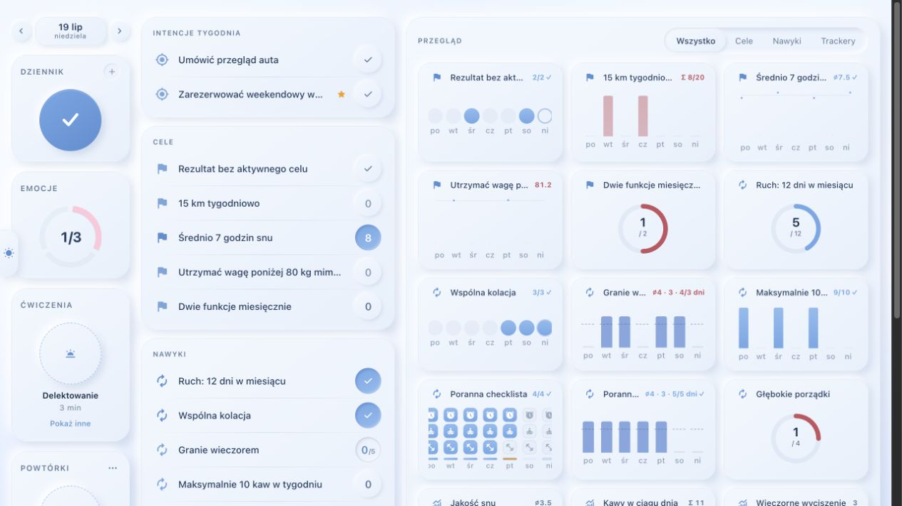
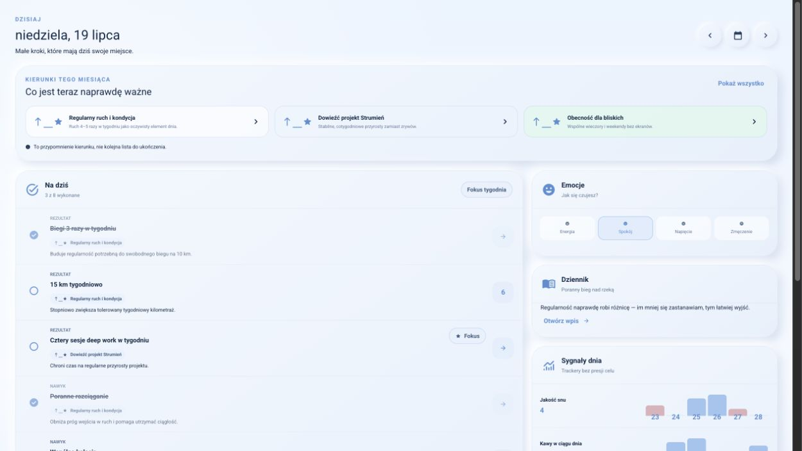
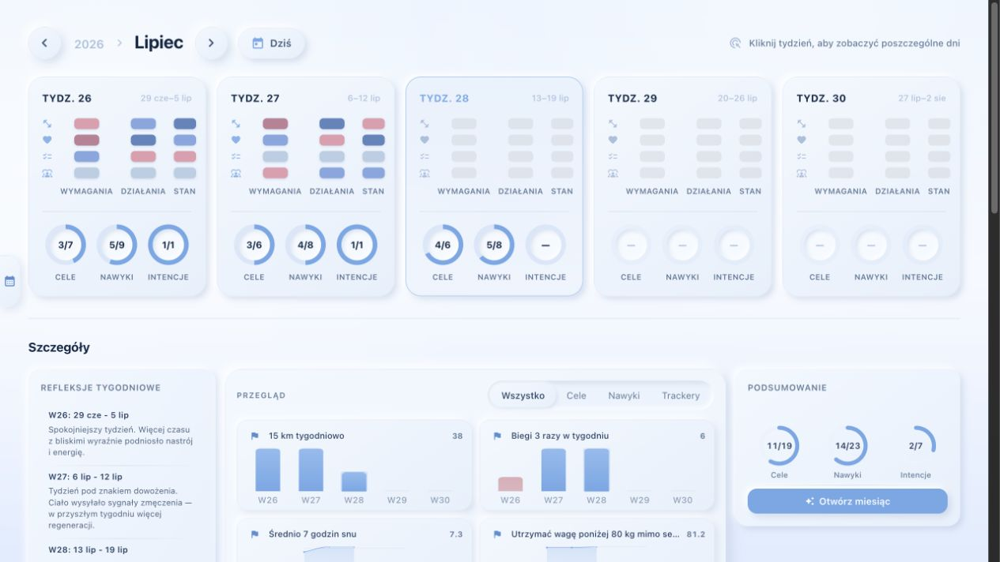
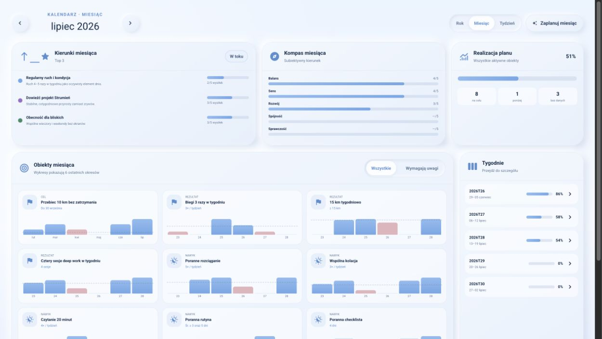
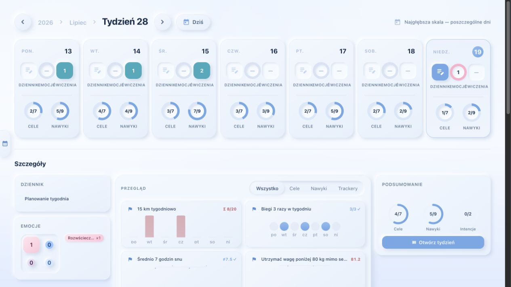
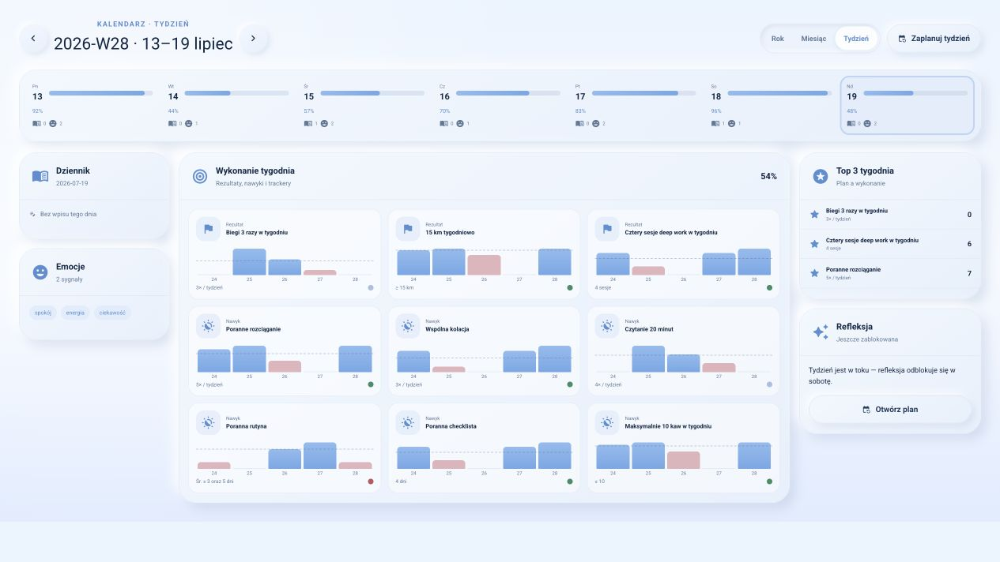
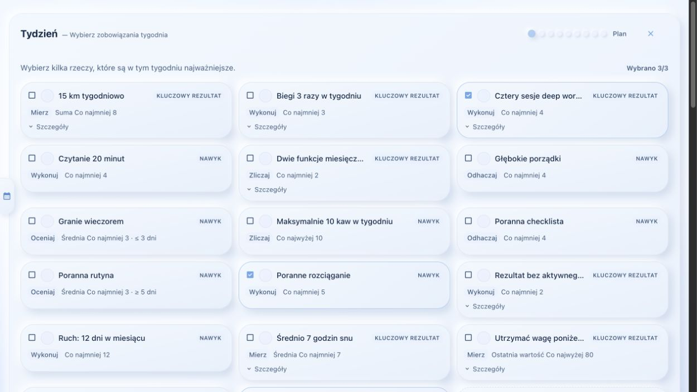
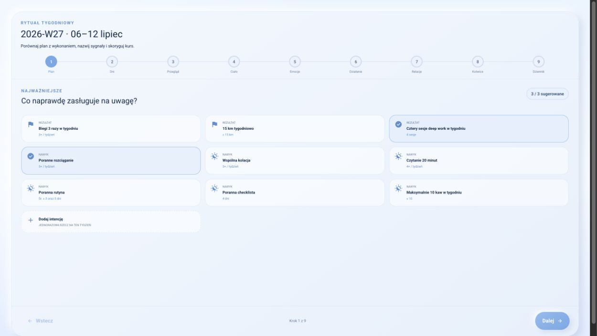
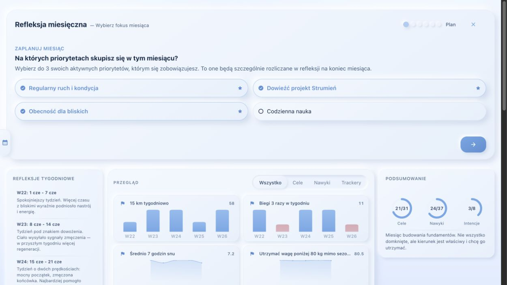
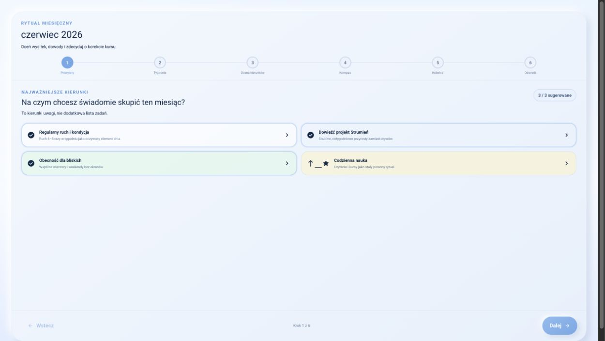

Mindful Growth UX Lab · porównania rich-v1 · 1265×712
Dzisiaj
Verify · baseline
Lab · priority-context-v1
Kalendarz miesięczny
Verify · baseline
Lab · reference-v1
Kalendarz tygodniowy
Verify · baseline
Lab · reference-v1
Rytuał tygodniowy
Verify · baseline
Lab · reference-v1
Rytuał miesięczny
Verify · baseline
Lab · reference-v1